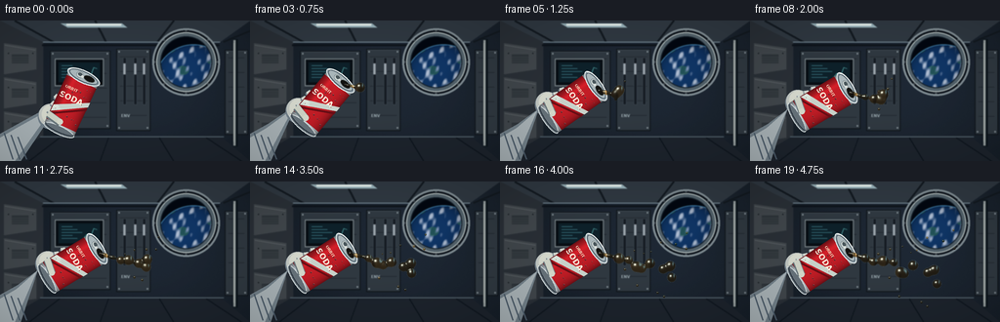
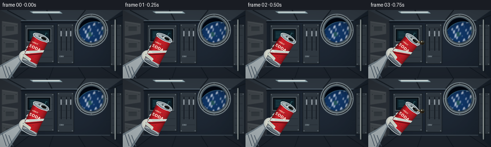
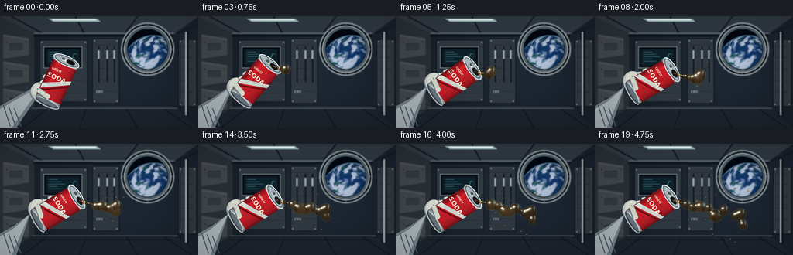
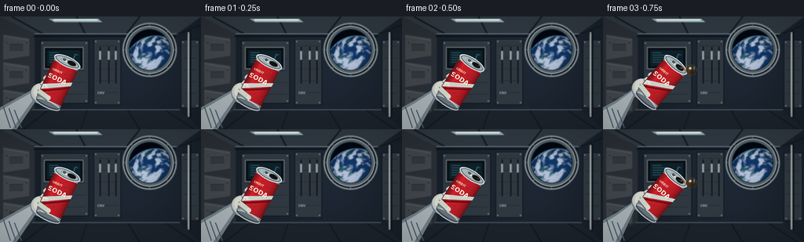

CODING AGENTS AS PIXEL WORLD MODELS
traex/GPT-6.1-Sol · phygen_005
点击播放 · 原生 RGB 像素
逐轮保存的候选
回放视频、检查图与代码变化。
每份候选均可单独播放。实际图片检查记录在下方工具轨迹中。
候选 01播放与检查图
点击播放 · 原生 RGB 像素


展开代码变化
--- 上一保存版本
+++ 本次保存版本
@@ -0,0 +1,266 @@
+from pathlib import Path
+import math
+import numpy as np
+from PIL import Image, ImageDraw, ImageFont, ImageFilter
+from artifact_io import save
+
+ROOT = Path(__file__).resolve().parent
+W,H,S = 256,144,3
+WW,HH = W*S,H*S
+rng=np.random.default_rng(21)
+
+def font(size,bold=False):
+ return ImageFont.truetype('/usr/share/fonts/truetype/dejavu/DejaVuSans'+('-Bold' if bold else '')+'.ttf', max(1,int(size*S)))
+def ellipse(d,box,fill,outline=None,width=1):
+ d.ellipse(tuple(int(v*S) for v in box),fill=fill,outline=outline,width=max(1,int(width*S)))
+def line(d,pts,fill,width=1):
+ d.line([(int(x*S),int(y*S)) for x,y in pts],fill=fill,width=max(1,int(width*S)))
+def poly(d,pts,fill):
+ d.polygon([(int(x*S),int(y*S)) for x,y in pts],fill=fill)
+def rect(d,box,fill,outline=None,width=1):
+ d.rectangle(tuple(int(v*S) for v in box),fill=fill,outline=outline,width=max(1,int(width*S)))
+
+def background():
+ yy,xx=np.mgrid[:HH,:WW]; x=xx/S;y=yy/S
+ lighting=9*np.exp(-((x-158)**2+(y-56)**2)/9500)
+ noise=rng.normal(0,.7,(HH,WW))
+ b=np.stack([22+lighting+noise,30+lighting*1.2+noise,39+lighting*1.6+noise],-1)
+ im=Image.fromarray(np.uint8(np.clip(b,0,255)));d=ImageDraw.Draw(im)
+ # Rear equipment bay and perspective frame.
+ poly(d,[(0,0),(256,0),(225,22),(44,22)],(48,57,66))
+ poly(d,[(0,0),(44,22),(44,118),(0,144)],(42,48,55))
+ poly(d,[(0,144),(44,118),(225,118),(256,144)],(29,36,45))
+ for x in [-100,15,97,178,282,372]:
+ line(d,[(x,0),(130+(x-130)*.65,22)],(19,26,33),2)
+ line(d,[(44,22),(225,22)],(116,134,146),1.3)
+ line(d,[(43,25),(224,25)],(14,20,27),2)
+ for y in [30,65,100]:
+ poly(d,[(4,y-7),(37,y-2),(37,y+20),(4,y+25)],(65,71,76))
+ line(d,[(5,y-5),(36,y)],(111,117,120),.8)
+ for xx in [8,33]:
+ ellipse(d,(xx,y+3,xx+1.3,y+4.3),(19,25,29))
+ for k in range(6):
+ line(d,[(12,y+5+k*1.6),(29,y+5+k*1.6)],(30,37,43),.8)
+ # Panel rectangles and restrained hardware.
+ for a,b,c,e in [(51,31,113,111),(119,29,154,113),(230,30,254,117)]:
+ rect(d,(a,b,c,e),(48,57,65),(16,22,28),1)
+ line(d,[(a+1,b+1),(c-1,b+1)],(97,109,119),.6)
+ for xx in [a+3,c-3]:
+ for yy in [b+3,e-3]:
+ ellipse(d,(xx-.7,yy-.7,xx+.7,yy+.7),(132,143,149))
+ for yy in range(int(b+8),int(e-5),15):
+ line(d,[(a+4,yy),(c-4,yy)],(32,39,47),.7)
+ # Instrument display in upper left; wiring.
+ rect(d,(56,39,106,67),(9,15,21),(124,134,139),1)
+ rect(d,(60,43,102,63),(14,33,42))
+ for i in range(5):
+ rect(d,(63,46+i*3,74+i%3*5,46.6+i*3),(59,119,131))
+ line(d,[(85,59),(89,54),(93,56),(96,48),(99,49)],(94,191,189),.7)
+ for i in range(3):
+ ellipse(d,(60+i*7,73,63+i*7,76),(20,26,32),(127,144,150),.5)
+ ellipse(d,(87,73,89,75),(124,216,184))
+ for x in [126,137,146]:
+ rect(d,(x,38,x+3,86),(23,29,36),(71,82,92),.5)
+ rect(d,(x+.6,44,x+2.4,55),(156,166,173))
+ d.text((124*S,95*S),'ENV',font=font(4,bold=True),fill=(158,173,180))
+ # Window structure.
+ ellipse(d,(156,8,225,77),(14,20,28),(132,145,151),2)
+ ellipse(d,(160,12,221,73),(83,98,107),(188,199,198),1.2)
+ ellipse(d,(164,16,217,69),(2,7,16),(22,34,44),1.2)
+ # Earth through circular port, procedural atmosphere and clouds.
+ ar=np.array(im).astype(float)
+ yy,xx=np.mgrid[:HH,:WW];x=xx/S;y=yy/S
+ cx,cy=190.5,42.5
+ X=(x-cx)/25.6;Y=(y-cy)/25.6
+ win=X*X+Y*Y<1
+ # Large Earth limb crossing the view.
+ px=(x-198)/39;py=(y-64)/39
+ rad=px*px+py*py;planet=(rad<1)&win
+ nz=np.sqrt(np.clip(1-rad,0,1));illum=np.clip(.35+.6*nz-.2*px-.3*py,.13,1)
+ cloud=np.sin(x*.21+y*.15+1.5*np.sin(y*.20))+np.sin(x*.46-y*.24)+.65*np.sin(x*.83+y*.5)
+ cloud=np.clip((cloud-.35)*.55,0,.93)
+ ocean=np.stack([16+cloud*173,54+cloud*148,103+cloud*119],-1)*illum[...,None]
+ land=np.sin(x*.17-y*.1)+np.sin(y*.23+x*.08)
+ ground=(land>1.35)&(cloud<.3)
+ ocean[ground]=np.stack([34+cloud[ground]*125,83+cloud[ground]*125,89+cloud[ground]*125],-1)*illum[ground,None]
+ ar[planet]=ocean[planet]
+ atm=win&(rad>=1)&(rad<1.07)
+ ar[atm]=np.array([82,161,218])*(np.clip((1.07-rad[atm])/.07,0,1)[:,None])
+ im=Image.fromarray(np.uint8(np.clip(ar,0,255)));d=ImageDraw.Draw(im)
+ for ang in range(0,360,45):
+ xx=cx+32*math.cos(math.radians(ang));yy=cy+32*math.sin(math.radians(ang))
+ ellipse(d,(xx-.8,yy-.8,xx+.8,yy+.8),(25,33,40),(144,154,159),.3)
+ # Cabin grab rails and bright ceiling strip.
+ line(d,[(241,19),(241,129)],(13,22,29),5)
+ line(d,[(240,20),(240,128)],(153,162,162),2.4)
+ line(d,[(239.5,23),(239.5,124)],(224,228,218),.55)
+ poly(d,[(62,3),(125,3),(130,7),(69,7)],(152,178,186))
+ line(d,[(68,4),(124,4)],(238,248,244),2)
+ line(d,[(41,119),(229,119)],(86,102,113),1)
+ for x in [61,111,163,211]:
+ line(d,[(x,120),(130+(x-130)*1.45,144)],(13,21,29),1.1)
+ return im.filter(ImageFilter.GaussianBlur(.48*S))
+
+
+def can_sprite():
+ # Local coordinates: body center (0,0), mouth at (6,-31).
+ ww,hh=52*S,83*S
+ yy,xx=np.mgrid[:hh,:ww];x=xx/S-26;y=yy/S-41
+ alpha=((abs(x)<17)&(y>=-29)&(y<=30)).astype(float)
+ curve=np.sqrt(np.clip(1-(x/17)**2,0,1))
+ light=np.clip(.34+.67*curve+.17*np.exp(-((x+8)/2.8)**2),0,1.2)
+ red=np.stack([181*light+15,27*light+3,34*light+5],-1)
+ metal=np.stack([150*light+36,161*light+35,167*light+35],-1)
+ rgb=np.where(((y<-24)|(y>25))[...,None],metal,red)
+ arr=np.dstack([np.clip(rgb,0,255),alpha*255]).astype(np.uint8)
+ im=Image.fromarray(arr,'RGBA');d=ImageDraw.Draw(im)
+ def b(box):return tuple(int((v+(26 if i%2==0 else 41))*S) for i,v in enumerate(box))
+ def p(pts):return [((a+26)*S,(c+41)*S) for a,c in pts]
+ # Printed label wrapping, slim silver edges, embossed lower ring.
+ d.polygon(p([(-16,9),(-16,16),(17,-3),(17,-8)]),fill=(225,236,226,225))
+ d.polygon(p([(-16,18),(-16,20),(17,1),(17,-1)]),fill=(105,14,22,255))
+ d.text(((26-13)*S,(41-16)*S),'ORBIT',font=font(4,True),fill=(245,223,194))
+ d.text(((26-15)*S,(41-9)*S),'SODA',font=font(8.3,True),fill=(255,246,225),stroke_width=0)
+ d.text(((26-10)*S,(41+19)*S),'COLA',font=font(3.5,True),fill=(248,209,170))
+ d.ellipse(b((-17,26,17,35)),fill=(104,116,124,255),outline=(211,220,221,255),width=1*S)
+ d.arc(b((-16,25,16,33)),0,180,fill=(45,55,65,255),width=S)
+ # Exposed lid, rolled rim, dark oval opening and pull-tab.
+ d.ellipse(b((-18,-36,18,-23)),fill=(133,149,159,255),outline=(231,240,239,255),width=S)
+ d.ellipse(b((-15.5,-34.5,15.5,-24.5)),fill=(171,184,188,255),outline=(69,85,94,255),width=max(1,int(.7*S)))
+ d.arc(b((-17,-36,17,-24)),183,335,fill=(249,255,248,255),width=S)
+ d.ellipse(b((0,-33,12,-27)),fill=(18,18,16,255),outline=(75,82,82,255),width=max(1,int(.7*S)))
+ d.ellipse(b((-8,-33,-.5,-27)),fill=(201,211,209,255),outline=(79,93,102,255),width=max(1,int(.6*S)))
+ d.ellipse(b((-6.5,-32,-2,-29)),fill=(74,87,92,255))
+ d.ellipse(b((-2.5,-30.5,0,-28)),fill=(218,224,220,255))
+ # A few condensation specks.
+ for _ in range(23):
+ a=rng.uniform(-14,14);c=rng.uniform(-22,23);r=rng.uniform(.22,.65)
+ d.ellipse(b((a-r,c-r,a+r,c+r)),fill=(112,32,38,180))
+ d.arc(b((a-r,c-r,a+r,c+r)),190,270,fill=(243,157,147,205),width=1)
+ return im
+
+BG=background();CAN=can_sprite()
+def pose(t):
+ ang=25+33*(.5-.5*math.cos(math.pi*min(t/1.65,1)))+1.5*math.sin(t*.9)
+ return 73+1.0*math.sin(t*.6),85-.8*math.sin(t*.7),ang
+
+def world_local(t,x,y):
+ cx,cy,a=pose(t);a=math.radians(a)
+ return cx+x*math.cos(a)-y*math.sin(a),cy+x*math.sin(a)+y*math.cos(a)
+
+
+def glove(im,t):
+ # Astronaut glove and cuff behind the can, turning with the wrist.
+ d=ImageDraw.Draw(im)
+ def pt(x,y): return world_local(t,x,y)
+ # Reaching sleeve.
+ poly(d,[(0,116),(18,106),pt(-15,7),pt(-15,31),(21,144),(0,144)],(116,130,139))
+ poly(d,[(0,120),(17,110),pt(-16,13),pt(-18,27),(15,144),(0,144)],(171,181,185))
+ for k in range(3):
+ line(d,[(4+k*7,115+k*2),(13+k*7,142)],(77,93,107),1.4)
+ # Rounded palm modelled by layers.
+ cc=pt(-13,20)
+ ellipse(d,(cc[0]-14,cc[1]-12,cc[0]+12,cc[1]+14),(114,128,139))
+ ellipse(d,(cc[0]-13,cc[1]-12,cc[0]+10,cc[1]+11),(196,201,196))
+ ellipse(d,(cc[0]-10,cc[1]-11,cc[0]+8,cc[1]+8),(217,220,208))
+ for y in [0,8,16]:
+ a=pt(-18,y);b=pt(-10,y+3)
+ line(d,[a,b],(127,141,148),7)
+ line(d,[(a[0]-.4,a[1]-1.0),(b[0]-.4,b[1]-1.0)],(212,219,211),4.8)
+ return im
+
+
+def fluid(im,balls):
+ if not balls:return im
+ bg=np.asarray(im).astype(np.float64)/255
+ # Exact projected isosurface of an inverse-fourth-power metaball field.
+ xmin=max(0,int((min(a-r*1.45 for a,b,r in balls)-2)*S));xmax=min(WW,int((max(a+r*1.45 for a,b,r in balls)+2)*S))
+ ymin=max(0,int((min(b-r*1.45 for a,b,r in balls)-2)*S));ymax=min(HH,int((max(b+r*1.45 for a,b,r in balls)+2)*S))
+ yy,xx=np.mgrid[ymin:ymax,xmin:xmax];x=xx/S;y=yy/S
+ bx=np.array([a for a,b,r in balls]);by=np.array([b for a,b,r in balls]);br=np.array([r for a,b,r in balls])
+ dx=x[...,None]-bx;dy=y[...,None]-by;q=dx*dx+dy*dy+1e-5;r4=br**4
+ f=np.sum(r4/q**2,axis=-1);mask=f>=1
+ if not mask.any():return im
+ dx=dx[mask];dy=dy[mask];q=q[mask];lo=np.zeros(mask.sum());hi=np.ones_like(lo)*max(br)*2.5
+ for _ in range(11):
+ z=(lo+hi)/2
+ val=np.sum(r4/(q+z[:,None]**2)**2,axis=1)
+ lo=np.where(val>1,z,lo);hi=np.where(val>1,hi,z)
+ z=(lo+hi)/2
+ wt=r4/(q+z[:,None]**2)**3
+ normals=np.stack([np.sum(wt*dx,1),np.sum(wt*dy,1),z*np.sum(wt,1)],-1)
+ normals/=np.linalg.norm(normals,axis=1)[:,None]
+ nx,ny,nz=normals.T
+ X=xx[mask];Y=yy[mask]
+ # Refraction through the amber fluid distorts the cabin behind it.
+ rx=np.clip((X-nx*z*S*.65).astype(int),0,WW-1);ry=np.clip((Y-ny*z*S*.65).astype(int),0,HH-1)
+ transmission=bg[ry,rx]*np.array([.81,.59,.32])
+ optical=(1-np.exp(-z*.085))[:,None]
+ transmission=transmission*(1-optical*.35)+optical*np.array([.14,.072,.018])
+ fresnel=.04+.65*(1-nz)**3
+ ex=np.clip((X+nx*45*S).astype(int),0,WW-1);ey=np.clip((Y+ny*45*S).astype(int),0,HH-1)
+ reflection=bg[ey,ex]*.55+np.array([.19,.25,.31])
+ out=transmission*(1-fresnel[:,None])+reflection*fresnel[:,None]
+ # Reflected overhead softbox and tiny brilliant glints.
+ light=np.array([-.45,-.65,.61]);light/=np.linalg.norm(light)
+ half=light+np.array([0,0,1]);half/=np.linalg.norm(half)
+ spec=np.clip(normals@half,0,1)
+ out+=spec[:,None]**48*np.array([.88,.91,.86])
+ out+=spec[:,None]**9*np.array([.085,.095,.09])
+ rim=(1-nz)**5
+ out+=rim[:,None]*np.array([.12,.15,.17])
+ # Rectangular cool window reflection on the opposite side.
+ stripe=np.exp(-((nx-.48)/.12)**2-((ny+.40)/.35)**2)
+ out+=stripe[:,None]*np.array([.24,.38,.43])
+ bg[Y,X]=np.clip(out,0,1)
+ return Image.fromarray((bg*255).astype(np.uint8))
+
+
+def particles(t):
+ balls=[]
+ if t<.35:return balls
+ ox,oy=world_local(t,6,-30)
+ growth=min((t-.35)/.55,1)
+ # Gentle, connected extrusion; capillary necks rather than a falling waterfall.
+ for j in range(8):
+ u=j/7
+ balls.append((ox+u*14*growth,oy+u*4*growth+math.sin(u*4+t*2)*.6*u, (1.75+.32*math.sin(j*1.5-t*3))*growth))
+ # Successive released globules follow inertial trajectories in microgravity.
+ for k in range(10):
+ release=.58+k*.45
+ age=t-release
+ if age<0:continue
+ px,py=world_local(release,6,-30)
+ vx=19+1.8*math.sin(k*1.3);vy=5.5+3*math.sin(k*1.7)
+ r=(4.0+1.7*(.5+.5*math.sin(k*2.8+.5)))*min(age/.2+0.25,1)
+ balls.append((px+14+vx*age,py+4+vy*age,r))
+ # Two companion droplets peel away without acceleration downwards.
+ if age>.30:
+ balls.append((px+17+(vx+4)*age,py+1+(vy-9)*age,1.15+.3*math.sin(k)))
+ if age>.65 and k%2==0:
+ balls.append((px+11+(vx-1)*age,py+8+(vy+8)*age,1.45))
+ return balls
+
+frames=[]
+for i in range(20):
+ t=i/4
+ im=BG.copy();im=glove(im,t)
+ cx,cy,ang=pose(t)
+ sprite=CAN.rotate(-ang,resample=Image.Resampling.BICUBIC,expand=True)
+ im.paste(sprite,(int(cx*S-sprite.width/2),int(cy*S-sprite.height/2)),sprite)
+ # Thumb laid across the lower side of the label, away from the mouth.
+ d=ImageDraw.Draw(im)
+ a=world_local(t,-17,20);b=world_local(t,-2,23)
+ line(d,[a,b],(109,123,128),8)
+ line(d,[(a[0],a[1]-1),(b[0],b[1]-1)],(209,214,201),6)
+ ellipse(d,(b[0]-3,b[1]-4,b[0]+3,b[1]+2),(218,221,207))
+ im=fluid(im,particles(t))
+ # Subtle photographic vignette, with supersampling for smooth small details.
+ ar=np.array(im).astype(float)
+ yy,xx=np.mgrid[:HH,:WW]
+ vig=1-.16*((xx/WW-.5)**2*2+(yy/HH-.5)**2*2)
+ ar*=vig[...,None]
+ im=Image.fromarray(np.uint8(np.clip(ar,0,255))).resize((W,H),Image.Resampling.LANCZOS)
+ frames.append(np.array(im))
+save(np.stack(frames),ROOT)
+print('Saved 20 RGB frames and viewer to',ROOT)
候选 02播放与检查图
点击播放 · 原生 RGB 像素


展开代码变化
--- 上一保存版本
+++ 本次保存版本
@@ -77,11 +77,19 @@
px=(x-198)/39;py=(y-64)/39
rad=px*px+py*py;planet=(rad<1)&win
nz=np.sqrt(np.clip(1-rad,0,1));illum=np.clip(.35+.6*nz-.2*px-.3*py,.13,1)
- cloud=np.sin(x*.21+y*.15+1.5*np.sin(y*.20))+np.sin(x*.46-y*.24)+.65*np.sin(x*.83+y*.5)
- cloud=np.clip((cloud-.35)*.55,0,.93)
+ # Multi-scale analytic weather texture, stretched by spherical coordinates.
+ lon=np.arctan2(px,np.maximum(nz,.01));lat=np.arcsin(np.clip(py,-1,1))
+ wx=lon*14+2*np.sin(lat*4);wy=lat*19+3*np.sin(lon*3)
+ def noise2(a,b):
+ ia=np.floor(a);ib=np.floor(b);fa=a-ia;fb=b-ib
+ fa=fa*fa*(3-2*fa);fb=fb*fb*(3-2*fb)
+ def hash2(c,e):return np.mod(np.sin(c*127.1+e*311.7+21)*43758.5453,1)
+ return (hash2(ia,ib)*(1-fa)+hash2(ia+1,ib)*fa)*(1-fb)+(hash2(ia,ib+1)*(1-fa)+hash2(ia+1,ib+1)*fa)*fb
+ weather=sum(noise2(wx*f,wy*f)*amp for f,amp in [(0.3,.50),(.65,.25),(1.5,.14),(3.5,.07),(7,.04)])
+ cloud=np.clip((weather-.43)*5,0,.96)
ocean=np.stack([16+cloud*173,54+cloud*148,103+cloud*119],-1)*illum[...,None]
- land=np.sin(x*.17-y*.1)+np.sin(y*.23+x*.08)
- ground=(land>1.35)&(cloud<.3)
+ land=3*noise2(lon*3+2,lat*4-7)
+ ground=(land>1.85)&(cloud<.3)
ocean[ground]=np.stack([34+cloud[ground]*125,83+cloud[ground]*125,89+cloud[ground]*125],-1)*illum[ground,None]
ar[planet]=ocean[planet]
atm=win&(rad>=1)&(rad<1.07)
@@ -194,9 +202,9 @@
X=xx[mask];Y=yy[mask]
# Refraction through the amber fluid distorts the cabin behind it.
rx=np.clip((X-nx*z*S*.65).astype(int),0,WW-1);ry=np.clip((Y-ny*z*S*.65).astype(int),0,HH-1)
- transmission=bg[ry,rx]*np.array([.81,.59,.32])
+ transmission=bg[ry,rx]*np.array([.97,.72,.40])
optical=(1-np.exp(-z*.085))[:,None]
- transmission=transmission*(1-optical*.35)+optical*np.array([.14,.072,.018])
+ transmission=transmission*(1-optical*.35)+optical*np.array([.24,.115,.025])
fresnel=.04+.65*(1-nz)**3
ex=np.clip((X+nx*45*S).astype(int),0,WW-1);ey=np.clip((Y+ny*45*S).astype(int),0,HH-1)
reflection=bg[ey,ex]*.55+np.array([.19,.25,.31])
@@ -232,7 +240,7 @@
if age<0:continue
px,py=world_local(release,6,-30)
vx=19+1.8*math.sin(k*1.3);vy=5.5+3*math.sin(k*1.7)
- r=(4.0+1.7*(.5+.5*math.sin(k*2.8+.5)))*min(age/.2+0.25,1)
+ r=(5.3+2.1*(.5+.5*math.sin(k*2.8+.5)))*min(age/.2+0.25,1)
balls.append((px+14+vx*age,py+4+vy*age,r))
# Two companion droplets peel away without acceleration downwards.
if age>.30:
可观测工具轨迹
实际执行的命令与返回图片。
命令 1exit 0
/bin/bash -lc 'ls -la && cat prompt.txt && cat GENERATION_RULES.md && cat task_spec.json'
命令 2exit 0
/bin/bash -lc "cat artifact_io.py && python - <<'PY'
import numpy,PIL
print('ready')
PY"命令 3exit 0
/bin/bash -lc 'fc-list | head -12'
命令 4exit 1
/bin/bash -lc "cat > generate.py <<'PY'
from pathlib import Path
import math
import numpy as np
from PIL import Image, ImageDraw, ImageFont, ImageFilter
from artifact_io import save
ROOT = Path(__file__).resolve().parent
W,H,S = 256,144,3
WW,HH = W*S,H*S
rng=np.random.default_rng(21)
def font(size,bold=False):
return ImageFont.truetype('/usr/share/fonts/truetype/dejavu/DejaVuSans'+('-Bold' if bold else '')+'.ttf', max(1,int(size*S)))
def ellipse(d,box,fill,outline=None,width=1):
d.ellipse(tuple(int(v*S) for v in box),fill=fill,outline=outline,width=max(1,int(width*S)))
def line(d,pts,fill,width=1):
d.line([(int(x*S),int(y*S)) for x,y in pts],fill=fill,width=max(1,int(width*S)))
def poly(d,pts,fill):
d.polygon([(int(x*S),int(y*S)) for x,y in pts],fill=fill)
def rect(d,box,fill,outline=None,width=1):
d.rectangle(tuple(int(v*S) for v in box),fill=fill,outline=outline,width=max(1,int(width*S)))
def background():
yy,xx=np.mgrid[:HH,:WW]; x=xx/S;y=yy/S
lighting=9*np.exp(-((x-158)**2+(y-56)**2)/9500)
noise=rng.normal(0,.7,(HH,WW))
b=np.stack([22+lighting+noise,30+lighting*1.2+noise,39+lighting*1.6+noise],-1)
im=Image.fromarray(np.uint8(np.clip(b,0,255)));d=ImageDraw.Draw(im)
# Rear equipment bay and perspective frame.
poly(d,[(0,0),(256,0),(225,22),(44,22)],(48,57,66))
poly(d,[(0,0),(44,22),(44,118),(0,144)],(42,48,55))
poly(d,[(0,144),(44,118),(225,118),(256,144)],(29,36,45))
for x in [-100,15,97,178,282,372]:
line(d,[(x,0),(130+(x-130)*.65,22)],(19,26,33),2)
line(d,[(44,22),(225,22)],(116,134,146),1.3)
line(d,[(43,25),(224,25)],(14,20,27),2)
for y in [30,65,100]:
poly(d,[(4,y-7),(37,y-2),(37,y+20),(4,y+25)],(65,71,76))
line(d,[(5,y-5),(36,y)],(111,117,120),.8)
for xx in [8,33]:
ellipse(d,(xx,y+3,xx+1.3,y+4.3),(19,25,29))
for k in range(6):
line(d,[(12,y+5+k*1.6),(29,y+5+k*1.6)],(30,37,43),.8)
# Panel rectangles and restrained hardware.
for a,b,c,e in [(51,31,113,111),(119,29,154,113),(230,30,254,117)]:
rect(d,(a,b,c,e),(48,57,65),(16,22,28),1)
line(d,[(a+1,b+1),(c-1,b+1)],(97,109,119),.6)
for xx in [a+3,c-3]:
for yy in [b+3,e-3]:
ellipse(d,(xx-.7,yy-.7,xx+.7,yy+.7),(132,143,149))
for yy in range(int(b+8),int(e-5),15):
line(d,[(a+4,yy),(c-4,yy)],(32,39,47),.7)
# Instrument display in upper left; wiring.
rect(d,(56,39,106,67),(9,15,21),(124,134,139),1)
rect(d,(60,43,102,63),(14,33,42))
for i in range(5):
rect(d,(63,46+i*3,74+i%3*5,46.6+i*3),(59,119,131))
line(d,[(85,59),(89,54),(93,56),(96,48),(99,49)],(94,191,189),.7)
for i in range(3):
ellipse(d,(60+i*7,73,63+i*7,76),(20,26,32),(127,144,150),.5)
ellipse(d,(87,73,89,75),(124,216,184))
for x in [126,137,146]:
rect(d,(x,38,x+3,86),(23,29,36),(71,82,92),.5)
rect(d,(x+.6,44,x+2.4,55),(156,166,173))
d.text((124*S,95*S),'ENV',font=font(4,bold=True),fill=(158,173,180))
# Window structure.
ellipse(d,(156,8,225,77),(14,20,28),(132,145,151),2)
ellipse(d,(160,12,221,73),(83,98,107),(188,199,198),1.2)
ellipse(d,(164,16,217,69),(2,7,16),(22,34,44),1.2)
# Earth through circular port, procedural atmosphere and clouds.
ar=np.array(im).astype(float)
cx,cy=190.5,42.5
X=(x-cx)/25.6;Y=(y-cy)/25.6
win=X*X+Y*Y<1
# Large Earth limb crossing the view.
px=(x-198)/39;py=(y-64)/39
rad=px*px+py*py;planet=(rad<1)&win
nz=np.sqrt(np.clip(1-rad,0,1));illum=np.clip(.35+.6*nz-.2*px-.3*py,.13,1)
cloud=np.sin(x*.21+y*.15+1.5*np.sin(y*.20))+np.sin(x*.46-y*.24)+.65*np.sin(x*.83+y*.5)
cloud=np.clip((cloud-.35)*.55,0,.93)
ocean=np.stack([16+cloud*173,54+cloud*148,103+cloud*119],-1)*illum[...,None]
land=np.sin(x*.17-y*.1)+np.sin(y*.23+x*.08)
ground=(land>1.35)&(cloud<.3)
ocean[ground]=np.stack([34+cloud[ground]*125,83+cloud[ground]*125,89+cloud[ground]*125],-1)*illum[ground,None]
ar[planet]=ocean[planet]
atm=win&(rad>=1)&(rad<1.07)
ar[atm]=np.array([82,161,218])*(np.clip((1.07-rad[atm])/.07,0,1)[:,None])
im=Image.fromarray(np.uint8(np.clip(ar,0,255)));d=ImageDraw.Draw(im)
for ang in range(0,360,45):
xx=cx+32*math.cos(math.radians(ang));yy=cy+32*math.sin(math.radians(ang))
ellipse(d,(xx-.8,yy-.8,xx+.8,yy+.8),(25,33,40),(144,154,159),.3)
# Cabin grab rails and bright ceiling strip.
line(d,[(241,19),(241,129)],(13,22,29),5)
line(d,[(240,20),(240,128)],(153,162,162),2.4)
line(d,[(239.5,23),(239.5,124)],(224,228,218),.55)
poly(d,[(62,3),(125,3),(130,7),(69,7)],(152,178,186))
line(d,[(68,4),(124,4)],(238,248,244),2)
line(d,[(41,119),(229,119)],(86,102,113),1)
for x in [61,111,163,211]:
line(d,[(x,120),(130+(x-130)*1.45,144)],(13,21,29),1.1)
return im.filter(ImageFilter.GaussianBlur(.48*S))
def can_sprite():
# Local coordinates: body center (0,0), mouth at (6,-31).
ww,hh=52*S,83*S
yy,xx=np.mgrid[:hh,:ww];x=xx/S-26;y=yy/S-41
alpha=((abs(x)<17)&(y>=-29)&(y<=30)).astype(float)
curve=np.sqrt(np.clip(1-(x/17)**2,0,1))
light=np.clip(.34+.67*curve+.17*np.exp(-((x+8)/2.8)**2),0,1.2)
red=np.stack([181*light+15,27*light+3,34*light+5],-1)
metal=np.stack([150*light+36,161*light+35,167*light+35],-1)
rgb=np.where(((y<-24)|(y>25))[...,None],metal,red)
arr=np.dstack([np.clip(rgb,0,255),alpha*255]).astype(np.uint8)
im=Image.fromarray(arr,'RGBA');d=ImageDraw.Draw(im)
def b(box):return tuple(int((v+(26 if i%2==0 else 41))*S) for i,v in enumerate(box))
def p(pts):return [((a+26)*S,(c+41)*S) for a,c in pts]
# Printed label wrapping, slim silver edges, embossed lower ring.
d.polygon(p([(-16,9),(-16,16),(17,-3),(17,-8)]),fill=(225,236,226,225))
d.polygon(p([(-16,18),(-16,20),(17,1),(17,-1)]),fill=(105,14,22,255))
d.text(((26-13)*S,(41-16)*S),'ORBIT',font=font(4,True),fill=(245,223,194))
d.text(((26-15)*S,(41-9)*S),'SODA',font=font(8.3,True),fill=(255,246,225),stroke_width=0)
d.text(((26-10)*S,(41+19)*S),'COLA',font=font(3.5,True),fill=(248,209,170))
d.ellipse(b((-17,26,17,35)),fill=(104,116,124,255),outline=(211,220,221,255),width=1*S)
d.arc(b((-16,25,16,33)),0,180,fill=(45,55,65,255),width=S)
# Exposed lid, rolled rim, dark oval opening and pull-tab.
d.ellipse(b((-18,-36,18,-23)),fill=(133,149,159,255),outline=(231,240,239,255),width=S)
d.ellipse(b((-15.5,-34.5,15.5,-24.5)),fill=(171,184,188,255),outline=(69,85,94,255),width=max(1,int(.7*S)))
d.arc(b((-17,-36,17,-24)),183,335,fill=(249,255,248,255),width=S)
d.ellipse(b((0,-33,12,-27)),fill=(18,18,16,255),outline=(75,82,82,255),width=max(1,int(.7*S)))
d.ellipse(b((-8,-33,-.5,-27)),fill=(201,211,209,255),outline=(79,93,102,255),width=max(1,int(.6*S)))
d.ellipse(b((-6.5,-32,-2,-29)),fill=(74,87,92,255))
d.ellipse(b((-2.5,-30.5,0,-28)),fill=(218,224,220,255))
# A few condensation specks.
for _ in range(23):
a=rng.uniform(-14,14);c=rng.uniform(-22,23);r=rng.uniform(.22,.65)
d.ellipse(b((a-r,c-r,a+r,c+r)),fill=(112,32,38,180))
d.arc(b((a-r,c-r,a+r,c+r)),190,270,fill=(243,157,147,205),width=1)
return im
BG=background();CAN=can_sprite()
def pose(t):
ang=25+33*(.5-.5*math.cos(math.pi*min(t/1.65,1)))+1.5*math.sin(t*.9)
return 73+1.0*math.sin(t*.6),85-.8*math.sin(t*.7),ang
def world_local(t,x,y):
cx,cy,a=pose(t);a=math.radians(a)
return cx+x*math.cos(a)-y*math.sin(a),cy+x*math.sin(a)+y*math.cos(a)
def glove(im,t):
# Astronaut glove and cuff behind the can, turning with the wrist.
d=ImageDraw.Draw(im)
def pt(x,y): return world_local(t,x,y)
# Reaching sleeve.
poly(d,[(0,116),(18,106),pt(-15,7),pt(-15,31),(21,144),(0,144)],(116,130,139))
poly(d,[(0,120),(17,110),pt(-16,13),pt(-18,27),(15,144),(0,144)],(171,181,185))
for k in range(3):
line(d,[(4+k*7,115+k*2),(13+k*7,142)],(77,93,107),1.4)
# Rounded palm modelled by layers.
cc=pt(-13,20)
ellipse(d,(cc[0]-14,cc[1]-12,cc[0]+12,cc[1]+14),(114,128,139))
ellipse(d,(cc[0]-13,cc[1]-12,cc[0]+10,cc[1]+11),(196,201,196))
ellipse(d,(cc[0]-10,cc[1]-11,cc[0]+8,cc[1]+8),(217,220,208))
for y in [0,8,16]:
a=pt(-18,y);b=pt(-10,y+3)
line(d,[a,b],(127,141,148),7)
line(d,[(a[0]-.4,a[1]-1.0),(b[0]-.4,b[1]-1.0)],(212,219,211),4.8)
return im
def fluid(im,balls):
if not balls:return im
bg=np.asarray(im).astype(np.float64)/255
# Exact projected isosurface of an inverse-fourth-power metaball field.
xmin=max(0,int((min(a-r*1.45 for a,b,r in balls)-2)*S));xmax=min(WW,int((max(a+r*1.45 for a,b,r in balls)+2)*S))
ymin=max(0,int((min(b-r*1.45 for a,b,r in balls)-2)*S));ymax=min(HH,int((max(b+r*1.45 for a,b,r in balls)+2)*S))
yy,xx=np.mgrid[ymin:ymax,xmin:xmax];x=xx/S;y=yy/S
bx=np.array([a for a,b,r in balls]);by=np.array([b for a,b,r in balls]);br=np.array([r for a,b,r in balls])
dx=x[...,None]-bx;dy=y[...,None]-by;q=dx*dx+dy*dy+1e-5;r4=br**4
f=np.sum(r4/q**2,axis=-1);mask=f>=1
if not mask.any():return im
dx=dx[mask];dy=dy[mask];q=q[mask];lo=np.zeros(mask.sum());hi=np.ones_like(lo)*max(br)*2.5
for _ in range(11):
z=(lo+hi)/2
val=np.sum(r4/(q+z[:,None]**2)**2,axis=1)
lo=np.where(val>1,z,lo);hi=np.where(val>1,hi,z)
z=(lo+hi)/2
wt=r4/(q+z[:,None]**2)**3
normals=np.stack([np.sum(wt*dx,1),np.sum(wt*dy,1),z*np.sum(wt,1)],-1)
normals/=np.linalg.norm(normals,axis=1)[:,None]
nx,ny,nz=normals.T
X=xx[mask];Y=yy[mask]
# Refraction through the amber fluid distorts the cabin behind it.
rx=np.clip((X-nx*z*S*.65).astype(int),0,WW-1);ry=np.clip((Y-ny*z*S*.65).astype(int),0,HH-1)
transmission=bg[ry,rx]*np.array([.81,.59,.32])
optical=(1-np.exp(-z*.085))[:,None]
transmission=transmission*(1-optical*.35)+optical*np.array([.14,.072,.018])
fresnel=.04+.65*(1-nz)**3
ex=np.clip((X+nx*45*S).astype(int),0,WW-1);ey=np.clip((Y+ny*45*S).astype(int),0,HH-1)
reflection=bg[ey,ex]*.55+np.array([.19,.25,.31])
out=transmission*(1-fresnel[:,None])+reflection*fresnel[:,None]
# Reflected overhead softbox and tiny brilliant glints.
light=np.array([-.45,-.65,.61]);light/=np.linalg.norm(light)
half=light+np.array([0,0,1]);half/=np.linalg.norm(half)
spec=np.clip(normals@half,0,1)
out+=spec[:,None]**48*np.array([.88,.91,.86])
out+=spec[:,None]**9*np.array([.085,.095,.09])
rim=(1-nz)**5
out+=rim[:,None]*np.array([.12,.15,.17])
# Rectangular cool window reflection on the opposite side.
stripe=np.exp(-((nx-.48)/.12)**2-((ny+.40)/.35)**2)
out+=stripe[:,None]*np.array([.24,.38,.43])
bg[Y,X]=np.clip(out,0,1)
return Image.fromarray((bg*255).astype(np.uint8))
def particles(t):
balls=[]
if t<.35:return balls
ox,oy=world_local(t,6,-30)
growth=min((t-.35)/.55,1)
# Gentle, connected extrusion; capillary necks rather than a falling waterfall.
for j in range(8):
u=j/7
balls.append((ox+u*14*growth,oy+u*4*growth+math.sin(u*4+t*2)*.6*u, (1.75+.32*math.sin(j*1.5-t*3))*growth))
# Successive released globules follow inertial trajectories in microgravity.
for k in range(10):
release=.58+k*.45
age=t-release
if age<0:continue
px,py=world_local(release,6,-30)
vx=19+1.8*math.sin(k*1.3);vy=5.5+3*math.sin(k*1.7)
r=(4.0+1.7*(.5+.5*math.sin(k*2.8+.5)))*min(age/.2+0.25,1)
balls.append((px+14+vx*age,py+4+vy*age,r))
# Two companion droplets peel away without acceleration downwards.
if age>.30:
balls.append((px+17+(vx+4)*age,py+1+(vy-9)*age,1.15+.3*math.sin(k)))
if age>.65 and k%2==0:
balls.append((px+11+(vx-1)*age,py+8+(vy+8)*age,1.45))
return balls
frames=[]
for i in range(20):
t=i/4
im=BG.copy();im=glove(im,t)
cx,cy,ang=pose(t)
sprite=CAN.rotate(-ang,resample=Image.Resampling.BICUBIC,expand=True)
im.paste(sprite,(int(cx*S-sprite.width/2),int(cy*S-sprite.height/2)),sprite)
# Thumb laid across the lower side of the label, away from the mouth.
d=ImageDraw.Draw(im)
a=world_local(t,-17,20);b=world_local(t,-2,23)
line(d,[a,b],(109,123,128),8)
line(d,[(a[0],a[1]-1),(b[0],b[1]-1)],(209,214,201),6)
ellipse(d,(b[0]-3,b[1]-4,b[0]+3,b[1]+2),(218,221,207))
im=fluid(im,particles(t))
# Subtle photographic vignette, with supersampling for smooth small details.
ar=np.array(im).astype(float)
yy,xx=np.mgrid[:HH,:WW]
vig=1-.16*((xx/WW-.5)**2*2+(yy/HH-.5)**2*2)
ar*=vig[...,None]
im=Image.fromarray(np.uint8(np.clip(ar,0,255))).resize((W,H),Image.Resampling.LANCZOS)
frames.append(np.array(im))
save(np.stack(frames),ROOT)
print('Saved 20 RGB frames and viewer to',ROOT)
PY
python generate.py"命令 5exit 0
/bin/bash -lc "python - <<'PY'
p='generate.py'
s=open(p).read().replace('ar=np.array(im).astype(float)\\n cx,cy=190.5,42.5','ar=np.array(im).astype(float)\\n yy,xx=np.mgrid[:HH,:WW];x=xx/S;y=yy/S\\n cx,cy=190.5,42.5')
open(p,'w').write(s)
PY
python generate.py"命令 6exit 0
/bin/bash -lc "python - <<'PY'
p='generate.py'
s=open(p).read()
s=s.replace(\"cloud=np.sin(x*.21+y*.15+1.5*np.sin(y*.20))+np.sin(x*.46-y*.24)+.65*np.sin(x*.83+y*.5)\\n cloud=np.clip((cloud-.35)*.55,0,.93)\",\"\"\"# Multi-scale analytic weather texture, stretched by spherical coordinates.
lon=np.arctan2(px,np.maximum(nz,.01));lat=np.arcsin(np.clip(py,-1,1))
wx=lon*14+2*np.sin(lat*4);wy=lat*19+3*np.sin(lon*3)
def noise2(a,b):
ia=np.floor(a);ib=np.floor(b);fa=a-ia;fb=b-ib
fa=fa*fa*(3-2*fa);fb=fb*fb*(3-2*fb)
def hash2(c,e):return np.mod(np.sin(c*127.1+e*311.7+21)*43758.5453,1)
return (hash2(ia,ib)*(1-fa)+hash2(ia+1,ib)*fa)*(1-fb)+(hash2(ia,ib+1)*(1-fa)+hash2(ia+1,ib+1)*fa)*fb
weather=sum(noise2(wx*f,wy*f)*amp for f,amp in [(0.3,.50),(.65,.25),(1.5,.14),(3.5,.07),(7,.04)])
cloud=np.clip((weather-.43)*5,0,.96)\"\"\")
s=s.replace('land=np.sin(x*.17-y*.1)+np.sin(y*.23+x*.08)','land=3*noise2(lon*3+2,lat*4-7)')
s=s.replace('ground=(land>1.35)&(cloud<.3)','ground=(land>1.85)&(cloud<.3)')
s=s.replace(\"transmission=bg[ry,rx]*np.array([.81,.59,.32])\",\"transmission=bg[ry,rx]*np.array([.97,.72,.40])\")
s=s.replace(\"optical*np.array([.14,.072,.018])\",\"optical*np.array([.24,.115,.025])\")
s=s.replace(\"r=(4.0+1.7*(.5+.5*math.sin(k*2.8+.5)))\",\"r=(5.3+2.1*(.5+.5*math.sin(k*2.8+.5)))\")
s=s.replace(\"return 73+1.0*math.sin(t*.6),85-.8*math.sin(t*.7),ang\",\"return 73+1.0*math.sin(t*.6),85-.8*math.sin(t*.7),ang\")
open(p,'w').write(s)
PY
python generate.py"视觉工具实际返回图片 1

视觉工具实际返回图片 2

保存候选 2 份；完成命令 6 次；可验证图片返回 2 张。原始 API 响应与完整日志保留在本地。